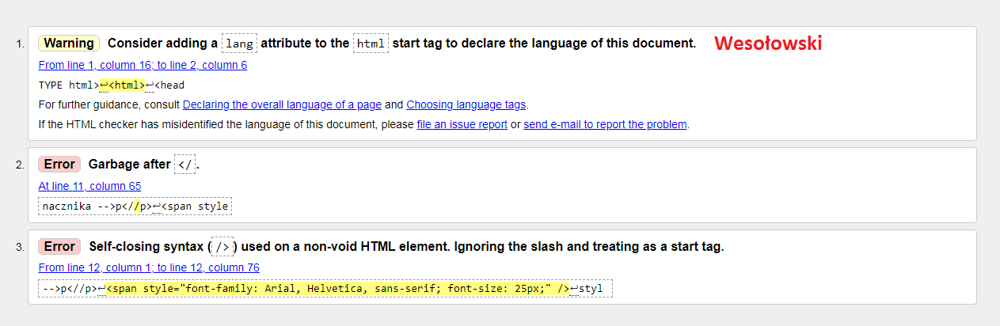
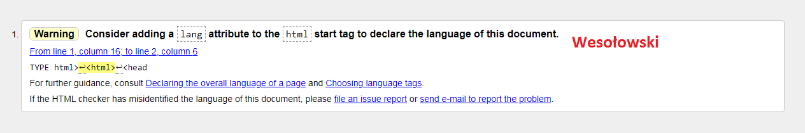

Walidator HTML oraz CSS.
Program (może być aplikacja Web, czyli strona WWW)
sprawdzający poprawność dokumentu o określonej
składni, np. walidator kodu HTML, walidator kodu CSS.
Pomyślne przejście walidacji oznacza zwykle, że kod został
napisany zgodnie z gramatyką (składnią) danego języka.
Walidatory potrafią, wskazać miejsce błędu oraz podać
przyczynę błędu→mogą podawać numer błędu.
walidator

Poprawione
